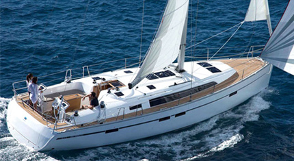

- Length: 46' (13,60m)
- People: 8 max
- Cabins: 4
- Toilets: 3
 DE
DEREQUEST FOR AVAILABILITY
Your Local Agency in Göcek for Charter License and Transit Log,
Bareboat & Skippered Charter, Flotilla Sailing, Sailing School,
Yacht Management and Maintenance.
Irmak Yachting's main base is in Göcek which is surrounded by heavenly
atmosphere. It is a perfect place for cruising among Fethiye and Göcek
bays.
DEVAMI
Teknelerimizde Vira Demir kitabının Göçek Körfezi kısmını bulabilirsiniz; Hem Göcek Körfezi (Osmanağa Çeşmesi, Atbükü, Boynuzbükü, Killebükü, Taşyaka Koyu (Bedri Rahmi), Sıralıbük Limanı, Sarsala, Manastır Koyu, Kapı Koyu, DEVAMI
Transit Log veya Türkçe ismi ile seyir izin belgesi (daha önceleri yat kayıt belgesi ismi de kullanılmış) seyre çıkanların kim olduğunu ve kaptanın bilgilerini içeren resmi bir belgedir. Bu belge T.C. Ulaştırma Denizcilik ve DEVAMI
…Ve nihayet!.. Göcek Yat Mola Noktaları için müjdeli haber geldi. Göbün, Küçük Sarsala, Bedri Rahmi (Taşyaka) ve Manastır (Akbük) Koyları’nı yaklaşık 30 yıldan bu yana işletmekte olan Yörük Aileleri bir araya gelerek bir kooperatif DEVAMI